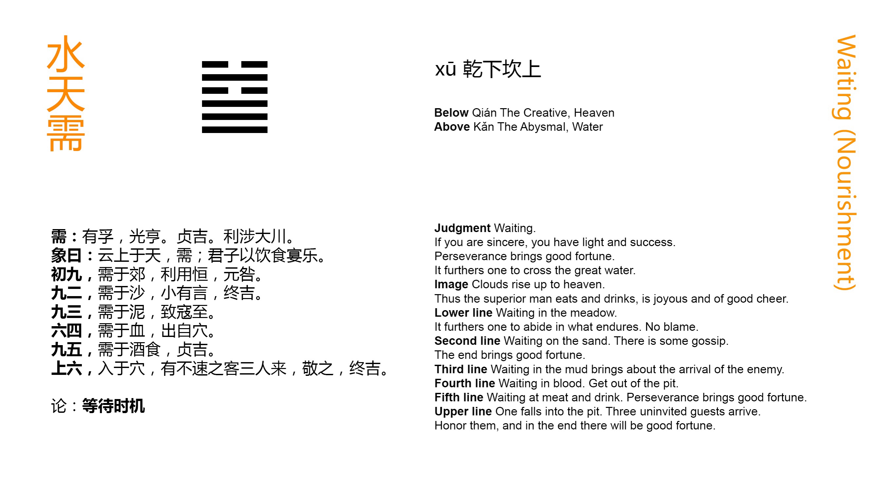

Chinese: 需 ䷄ xū

Xū ䷄ intimates that, with the sincerity which is declared in it, there will be brilliant success. With firmness there will be good fortune; and it will be advantageous to cross the great stream.
1. The first NINE, undivided, shows its subject waiting in the distant border. It will be well for him constantly to maintain (the purpose thus shown), in which case there will be no error.
䷄ changing to ䷯
Matching Line 1 in Adjacent Hexagram: ䷅
2. The second NINE, undivided, shows its subject waiting on the sand (of the mountain stream). He will (suffer) the small (injury of) being spoken (against), but in the end there will be good fortune.
䷄ changing to ䷾
Matching Line 2 in Adjacent Hexagram: ䷅
3. The third NINE, undivided, shows its subject in the mud (close by the stream). He thereby invites the approach of injury.
䷄ changing to ䷻
Matching Line 3 in Adjacent Hexagram: ䷅
4. The fourth SIX, divided, shows its subject waiting in (the place of) blood. But he will get out of the cavern.
䷄ changing to ䷪
Matching Line 4 in Adjacent Hexagram: ䷅
5. The fifth NINE, undivided, shows its subject waiting amidst the appliances of a feast. Through his firmness and correctness there will be good fortune.
䷄ changing to ䷊
Matching Line 5 in Adjacent Hexagram: ䷅
6. The topmost SIX, divided, shows its subject entered into the cavern. (But) there are three guests coming, without being urged, (to his help). If he receive them respectfully, there will be good fortune in the end.
䷄ changing to ䷈
Matching Line 6 in Adjacent Hexagram: ䷅
Xū ䷄ means waiting. Strength confronted by peril might be expected to advance boldly and at once to struggle with it; but it takes the wiser plan of waiting till success is sure. This is the lesson of the hexagram. That 'sincerity is declared in it' is proved from the fifth line in the position of honour and authority, central, itself undivided and in an odd place. In such a case, nothing but firm correctness is necessary to great success.
'Going through a great stream,' an expression frequent in the Yì, may mean undertaking hazardous enterprises, or encountering great difficulties, without any special reference; but more natural is it to understand by the great stream' the Yellow river, which the lords of Zhōu must cross in a revolutionary movement against the dynasty of Yīn and its tyrant. The passage of it by king Wǔ, the son of Wén in B. C. 1122, was certainly one of the greatest deeds in the history of China. It was preceded also by long waiting,' till the time of assured success came.
'The border' under line 1 means the frontier territory of the state. There seems no necessity for such a symbolism. 'The sand' and 'the mud' are appropriate with reference to the watery defile; but it is different with 'the border.' The subject of the line appears at work in his distant fields, not thinking of anything but his daily work; and he is advised to abide in that state and mind.
'The sand' of paragraph 2 suggests a nearer approach to the defile, but its subject is still self-restrained and waiting. I do not see what suggests the idea of his suffering from 'the strife of tongues.'
In paragraph 3 the subject is on the brink of the stream. His advance to that position has provoked resistance, which may result in his injury.
Line 4 has passed from the inner to the upper trigram, and entered on the scene of danger and strife; -- 'into the place of blood.' Its subject is 'weak and in the correct place for him;' he therefore retreats and escapes from the cavern, where he was engaged with his enemy.
Line 5 is strong and central, and in its correct place, being that of honour. All good qualities therefore belong to the subject of it, who has triumphed, and with firmness will triumph still more.
Line 6 is weak, and has entered deeply into the defile and its caverns. What will become of its subject? His correlate is the strong line 3 below, which comes with its two companions to his help. If they are respectfully received, that help will prove effectual. P. Regis tries to find out a reference in these 'three guests' to three princes who distinguished themselves by taking part with Zhōu in its struggle with Yīn or Shāng; see vol. i, pp. 279-282. I dare not be so confident of any historical reference.